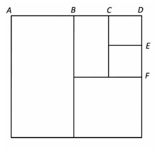
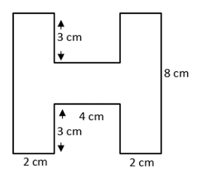
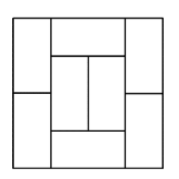

Hình vuông
Nguồn: [26 -27] ĐỀ CƯƠNG GIỮA KÌ 1 TOÁN 4.pdf · trang PDF 2
ĐỀ BÀI
Hình vuông chu vi 36 cm có diện tích bao nhiêu?
BÀI LÀM CỦA CON
Xem lời giải từng bước
Cạnh hình vuông:
Diện tích hình vuông:
Đáp số: 81 cm²
Kết quả:
Ôn TIMO 11/10 • Giữa kì 15/10 • Lớp 4
Tìm x: lần ngược đường đi · Bài lời văn: mỗi phép tính trả lời một câu hỏi · Chu vi và diện tích: đi quanh hay phủ kín?
Học một mục còn chưa chắc trước. Người lớn làm mẫu một câu, cùng con một câu, rồi để con tự làm. Danh sách bài phía dưới dùng để chọn và rà soát; hết giờ thì ghi phần còn lại.
Cuối buổi, hỏi: “Hôm nay con hiểu thêm điều gì? Con kiểm tra đáp án bằng cách nào?”
TIMO bổ sung khi đã xong bài chính: Lý thuyết số: phối hợp điều kiện · Phép toán mới: đọc định nghĩa trước · Chữ số tận cùng: theo dõi một chữ số. Chọn theo lỗi, không bắt học hết trong buổi.
Khung buổi học: 10 phút nhắc lý thuyết → 30 phút làm lại bài sai/chưa làm → nghỉ 5 phút → 15 phút chữa. Đánh dấu đủ từng ý; ưu tiên hoàn tất đề cương trước kiểm tra ngày 14/10.
Nguồn: 4 GE. CĐ 1. Tính nhanh - Tìm thành phần chưa biết.pdf · trang PDF 1
Tính trong ngoặc trước. Sau đó nhân và chia, cuối cùng cộng và trừ. Các phép cùng mức thực hiện từ trái sang phải. Với biểu thức chứa chữ, thay giá trị của chữ trước khi tính.
Ví dụ trong tài liệu
Đề cương giữa kì, câu 12: thay m bằng 2.
Tìm số xuất hiện trong từng tích và đưa số đó ra ngoài ngoặc. Một số đứng riêng được coi là tích của chính nó với 1.
Ví dụ trong tài liệu
Chuyên đề 1, bài 6 a:
Kiểm tra khoảng cách giữa hai số liên tiếp có cố định hay không. Đếm đủ cả số đầu và số cuối rồi mới tính tổng.
Ví dụ trong tài liệu
TIMO đề 1, câu 7: dãy từ 2 đến 38, cách nhau 4 đơn vị.
Ghép cặp phải giữ nguyên dấu của từng số. Khi tìm x, xác định cả cụm chứa x đang là thành phần nào của phép tính. Cuối cùng thay kết quả vào đề để kiểm tra.
Ví dụ trong tài liệu
Đề cương giữa kì, bài 6 a:
Nguồn: [26 -27] ĐỀ CƯƠNG GIỮA KÌ 1 TOÁN 4.pdf · trang PDF 3
Tính tiền từng loại trước rồi cộng. Muốn tìm đơn giá thì chia số tiền cho số lượng. Giảm một phần tư hóa đơn nghĩa là trừ đi một phần tư tổng tiền.
Ví dụ trong tài liệu
Đề cương giữa kì, bài 15 b: tổng tiền 460 000 đồng.
Số tiền giảm:
Số tiền phải trả:
Vẽ hai đoạn thẳng để thấy số lớn hơn số bé bao nhiêu. Nếu lấy hai lượng khác nhau mà còn bằng nhau, hiệu ban đầu bằng chênh lệch hai lượng lấy đi.
Ví dụ trong tài liệu
Đề cương giữa kì, bài 13: bao thứ hai nhiều hơn bao thứ nhất:
Nếu A gấp k lần B, biểu diễn B bằng một phần, A bằng k phần. Chia tổng cho tổng số phần để tìm một phần. Hai người cùng tăng tuổi nên hiệu tuổi không đổi.
Ví dụ trong tài liệu
TIMO đề 1, câu 15: tổng 18, Ashley gấp đôi Bell.
Bell có 6 dây buộc tóc.
Bài sản lượng: tìm kích thước, tính diện tích, tìm lượng trên một đơn vị diện tích, tính tổng lượng rồi đổi đơn vị. Bài làm ngược: bắt đầu từ kết quả cuối và thực hiện phép ngược theo thứ tự ngược.
Ví dụ trong tài liệu
TIMO đề 6, câu 3: từ kết quả 60, lần lượt nhân 10, cộng 79, chia 7 rồi trừ 4.
Nguồn: [26 -27] ĐỀ CƯƠNG GIỮA KÌ 1 TOÁN 4.pdf · trang PDF 1
Gọi cạnh hình vuông là a, chu vi là P và diện tích là S. Chu vi dùng đơn vị độ dài; diện tích dùng đơn vị vuông.
Ví dụ trong tài liệu
Đề cương giữa kì, câu 14: chu vi 36 cm.
Cạnh hình vuông:
Diện tích hình vuông:
Gọi chiều dài là a và chiều rộng là b. Muốn tính diện tích phải biết cả hai kích thước và dùng cùng đơn vị.
Ví dụ trong tài liệu
Đề cương giữa kì, câu 17: rộng 4 m, dài gấp 3 lần rộng.
Chiều dài:
Diện tích:
Hai đơn vị diện tích liền nhau gấp hoặc kém nhau 100 lần. Đổi từ lớn sang nhỏ thì nhân; từ nhỏ sang lớn thì chia. Không dùng hệ số 10 của đơn vị độ dài.
Ví dụ trong tài liệu
Đề cương giữa kì, bài 5:
Đánh dấu cạnh bằng nhau rồi chia hình thành các phần quen thuộc, hoặc lấy hình bao trừ phần khuyết. Khi diện tích cố định và cạnh là số tự nhiên, liệt kê đủ cặp cạnh rồi so sánh chu vi. Không đoán chiều dài bằng mắt.
Ví dụ trong tài liệu
TIMO đề 1, câu 18: diện tích 30. Các cặp cạnh là (1; 30), (2; 15), (3; 10), (5; 6). Cặp cuối cho chu vi nhỏ nhất:
Làm vào vở, nêu cách làm trước khi mở lời giải. Ghi kết quả từng bài để buổi sau chọn đúng bài cần chữa.
Chỉ mở mục tương ứng bài đang chọn hoặc lỗi vừa mắc. Không học hết danh sách trong một buổi.
Nguồn: [26 -27] ĐỀ CƯƠNG GIỮA KÌ 1 TOÁN 4.pdf · trang PDF 2
Hình vuông chu vi 36 cm có diện tích bao nhiêu?
Cạnh hình vuông:
Diện tích hình vuông:
Đáp số: 81 cm²
Nguồn: [26 -27] ĐỀ CƯƠNG GIỮA KÌ 1 TOÁN 4.pdf · trang PDF 2
Tính:
Thực hiện phép nhân trước, sau đó cộng.
Đáp số: 60 000
Nguồn: [26 -27] ĐỀ CƯƠNG GIỮA KÌ 1 TOÁN 4.pdf · trang PDF 2
Hoa mua 5 quyển vở, mỗi quyển 8000 đồng và 2 hộp bút chì, mỗi hộp 25000 đồng. Tổng tiền?
Tiền mua vở:
Tiền mua bút chì:
Tổng số tiền:
Đáp số: 90 000 đồng
Nguồn: [26 -27] ĐỀ CƯƠNG GIỮA KÌ 1 TOÁN 4.pdf · trang PDF 2
Rộng 4 m, dài gấp 3 lần rộng. Tính diện tích.
Chiều dài hình chữ nhật:
Diện tích hình chữ nhật:
Đáp số: 48 m²
Nguồn: [26 -27] ĐỀ CƯƠNG GIỮA KÌ 1 TOÁN 4.pdf · trang PDF 2
5 năm nữa cháu có tuổi là số nhỏ nhất có hai chữ số. Ông hơn cháu 50 tuổi. Năm nay ông bao nhiêu tuổi?
Số nhỏ nhất có hai chữ số là 10. Tuổi cháu năm nay:
Tuổi ông năm nay:
Đáp số: 55 tuổi
Nguồn: [26 -27] ĐỀ CƯƠNG GIỮA KÌ 1 TOÁN 4.pdf · trang PDF 2
Tính:
Đặt thừa số chung là 12 345. Số hạng cuối bằng 12 345 nhân 1.
Đáp số: 1 234 500
Nguồn: [26 -27] ĐỀ CƯƠNG GIỮA KÌ 1 TOÁN 4.pdf · trang PDF 3
Tìm x:
Chuyển phần cộng đã biết để tìm tích chứa x.
Đáp số: x = 2 746
Tìm thương chứa x trước.
Đáp số: x = 2 970
Tìm số bị trừ, sau đó tìm thừa số x.
Đáp số: x = 2 246
Tìm số trừ, sau đó tìm thừa số x.
Đáp số: x = 1 655
Thay từng giá trị x vào phương trình ban đầu để kiểm tra.
Nguồn: [26 -27] ĐỀ CƯƠNG GIỮA KÌ 1 TOÁN 4.pdf · trang PDF 3
Tính bằng cách hợp lý nhất:
Ghép phép trừ để tạo số tròn nghìn.
Đáp số: 6 257
Đặt thừa số chung.
Đáp số: 202 400
Nguồn: [26 -27] ĐỀ CƯƠNG GIỮA KÌ 1 TOÁN 4.pdf · trang PDF 3
Hôm qua bán 5 kg cam thu 100000 đồng; hôm nay bán 4 kg thu 100000 đồng. Giá hôm nay cao hơn bao nhiêu nghìn đồng/kg?
Giá mỗi ki-lô-gam hôm qua:
Giá mỗi ki-lô-gam hôm nay:
Mức tăng giá:
Đáp số: 5 nghìn đồng mỗi ki-lô-gam
Nguồn: [26 -27] ĐỀ CƯƠNG GIỮA KÌ 1 TOÁN 4.pdf · trang PDF 3
Đất dài 210 m, dài gấp 3 lần rộng. Cứ 3 m² thu 9 kg sắn. Thu được bao nhiêu tạ?
Chiều rộng mảnh đất:
Diện tích mảnh đất:
Số sắn thu được trên mỗi mét vuông:
Tổng số sắn thu được và đổi ra tạ:
Đáp số: 441 tạ
Nguồn: [26 -27] ĐỀ CƯƠNG GIỮA KÌ 1 TOÁN 4.pdf · trang PDF 3
Thùng thứ nhất 435 lít, hơn thùng thứ hai 15 lít, ít hơn thùng thứ ba 58 lít. Tổng dầu?
Số dầu trong thùng thứ hai:
Số dầu trong thùng thứ ba:
Tổng số dầu:
Đáp số: 1 348 lít
Nguồn: [26 -27] ĐỀ CƯƠNG GIỮA KÌ 1 TOÁN 4.pdf · trang PDF 3
Đất dài 15 m, rộng 8 m. Mỗi 1 m² cần 2 tấn cát; mỗi chuyến chở 8 tấn. Cần bao nhiêu chuyến?
Diện tích mảnh đất:
Khối lượng cát cần dùng:
Số chuyến xe:
Đáp số: 30 chuyến
Nguồn: [26 -27] ĐỀ CƯƠNG GIỮA KÌ 1 TOÁN 4.pdf · trang PDF 4
Hai bao tổng 147 kg. Lấy bao 1 ra 5 kg, bao 2 ra 22 kg thì còn bằng nhau. Tìm khối lượng mỗi bao.
Bao thứ hai ban đầu nhiều hơn bao thứ nhất:
Khối lượng bao thứ nhất:
Khối lượng bao thứ hai:
Đáp số: Bao thứ nhất: 65 kg; bao thứ hai: 82 kg
Kiểm tra: lấy đi theo đề thì mỗi bao còn 60 kg.
Nguồn: [26 -27] ĐỀ CƯƠNG GIỮA KÌ 1 TOÁN 4.pdf · trang PDF 4
Lan mua 4 mũ, 55000 đồng/mũ và 3 áo choàng, 80000 đồng/áo.
a)Tổng tiền?
b)Giảm hóa đơn, còn trả bao nhiêu?
Tính tiền mũ và áo choàng rồi cộng.
Đáp số: 460 000 đồng
Tính tiền được giảm, rồi lấy tổng tiền trừ đi.
Đáp số: 345 000 đồng
Nguồn: [26 -27] ĐỀ CƯƠNG GIỮA KÌ 1 TOÁN 4.pdf · trang PDF 4
Hình vuông ban đầu chu vi 64 cm, cắt thành 3 hình vuông và 2 hình chữ nhật; AB=BD, BC=CD, DE=EF. Tính diện tích hình vuông nhỏ nhất. Xem hình nguồn.

Cạnh hình vuông lớn:
Vì AB bằng BD nên mỗi đoạn dài:
Vì BC bằng CD nên mỗi đoạn dài:
Hai hình vuông ở góc trên bên phải có cạnh CD bằng 4 cm, hình vuông phía dưới có cạnh 8 cm. Diện tích hình vuông nhỏ nhất:
Đáp số: 16 cm²
Nguồn: [26 -27] ĐỀ CƯƠNG GIỮA KÌ 1 TOÁN 4.pdf · trang PDF 4
Tính diện tích hình chữ H theo hình có cao 8 cm; hai cột rộng 2 cm; khoảng giữa 4 cm; phần khuyết trên/dưới sâu 3 cm.

Hình bao có chiều rộng bằng tổng hai cột và khoảng giữa:
Diện tích hình bao:
Diện tích hai phần khuyết:
Diện tích hình chữ H:
Đáp số: 40 cm²
Nguồn: [26 -27] ĐỀ CƯƠNG GIỮA KÌ 1 TOÁN 4.pdf · trang PDF 4
8 hình chữ nhật y hệt nhau, mỗi hình chu vi 36, ghép thành hình vuông như hình nguồn. Tính chu vi hình vuông.

Gọi cạnh dài hình chữ nhật là a, cạnh ngắn là b. Theo chiều đứng, cạnh hình vuông lớn bằng 2 a; theo chiều ngang, cạnh đó bằng a cộng hai lần b.
Chu vi mỗi hình chữ nhật bằng 36.
Cạnh và chu vi hình vuông lớn:
Đáp số: 96 (đề không ghi đơn vị)
Con nói lại một quy tắc, chọn một lỗi cần tránh và tự giải lại câu sai không nhìn lời giải. Với bài cần gợi ý, giữ trạng thái đó đến khi tự làm được.